# for spatial data handling
library(terra)
library(sf)
# tidyverse functionality
library(tidyverse)
# data acquisition
library(geodata)
library(rnaturalearth)
# modelling
library(caret)
library(CAST)
# visuals
library(tmap)
library(viridis)
library(scales)CAST4Ecology Modelling Tutorial
Preparations
Needed R Packages
Setup directory structure
Set up directories
dir.create("raw") # for raw downloaded data
dir.create("data") # for preprocessed input data
dir.create("modelling") # for models and outcomesPredictor Data
This part is optional if you have the data already.
Get modeldomain and predictors
# define region: all of south america
modeldomain = rnaturalearth::ne_countries(continent = "South America", returnclass = "sf", scale = 110)
# download or load worldclim for prediction
wc = geodata::worldclim_global(var = "bio", res = 5, path = "raw/")
elev = geodata::elevation_global(res = 5, path = "raw/")
# reduce predictor data to model domain
predictors = c(wc, elev)
predictors = crop(predictors, modeldomain)
names(predictors) = names(predictors) |> str_remove(pattern = "wc2.1_5m_") # clean up layer namesResponse: sPlotOpen Species Richness
Download sPlotOpen
# download sPlotOpen if not already done
if(!file.exists("raw/splotopen/sPlotOpen.RData")){
download.file("https://idata.idiv.de/ddm/Data/DownloadZip/3474?version=5779", destfile = "raw/splotopen.zip")
unzip("raw/splotopen.zip", exdir = "raw/splotopen")
unzip("raw/splotopen/sPlotOpen.RData(2).zip", exdir = "raw/splotopen")
}Species Richness for South America
# Gather Response Variable: sPlotOpen Species Richness for South America
## see Appendix 1 of https://doi.org/10.1111/geb.13346
load("raw/splotopen/sPlotOpen.RData")
splot = header.oa |>
filter(Resample_1 == TRUE) |>
filter(Continent == "South America") |>
st_as_sf(coords = c("Longitude", "Latitude"), crs = 4326) |>
left_join(CWM_CWV.oa |> select(c("PlotObservationID", "Species_richness"))) |>
select(c("PlotObservationID", "GIVD_ID", "Country", "Biome",
"Species_richness")) |>
na.omit()
# cleanup workspace
rm(CWM_CWV.oa, DT2.oa, header.oa, metadata.oa, reference.oa, sPlotOpen_citation)Compile response and predictors as reference samples
# skipping: extracting worldclim in full resolution in order to get more training data
# this would take long and requires a lot of ram/cpu since global worldclim is a large file
if(FALSE){
wcf = rast(list.files("~/data/global_environmental_layer/geodata_30s/", full.names = TRUE))
wcf = crop(wcf, modeldomain)
names(wcf) = names(wcf) |> str_remove(pattern = "wc2.1_30s_")
wcf$lat = terra::init(wcf, "y")
wcf$lon = terra::init(wcf, "x")
wcf = c(wcf, wcf_terrain)
# extract predictor values and attach to response
splot = terra::extract(wcf, splot, ID = FALSE, bind = TRUE) |>
st_as_sf() |>
na.omit()
# only keep unique locations
## some reference sample locations are in the same predictor stack pixel
## this can lead to erroneous models and misleading validations
plots_uni = splot[!duplicated(c(splot$lat, splot$lon)),]
plots_uni = plots_uni |> na.omit()
plots_uni$lat = NULL
plots_uni$lon = NULL
}
# instead, we compiled the predictor data for reference samples:
splot_predictors = readRDS("reference_predictors.RDS")
plots = right_join(splot, splot_predictors, by = join_by("PlotObservationID"))Part 1: A simple model
Wording
## Wording from now on:
# 1. plots: reference samples
# 2. predictors: spatially continuous predictor stack
# 3. modeldomain: where we want to predict (all of south america)
# 4. predictor_names: names of predictors in the reference samples and the predictor stack
# 5. response_name: name of the response variable in plots (what we want to model)
predictor_names = names(predictors)
response_name = "Species_richness"
training_data = plots |> st_drop_geometry() # reference samples without coordinatesRandom Forest with Random Cross Validation
set.seed(6502)
rfmodel_rcv = caret::train(x = training_data |> select(all_of(predictor_names)),
y = training_data |> pull(response_name),
method = "ranger",
num.trees = 100,
trControl = trainControl(method = "cv",
savePredictions = "final"))
rfmodel_rcvRandom Forest
645 samples
20 predictor
No pre-processing
Resampling: Cross-Validated (10 fold)
Summary of sample sizes: 581, 581, 581, 581, 580, 580, ...
Resampling results across tuning parameters:
mtry splitrule RMSE Rsquared MAE
2 variance 27.35229 0.6223699 16.12647
2 extratrees 27.86673 0.6094472 16.58850
11 variance 28.06613 0.6024260 16.40946
11 extratrees 27.99829 0.6051649 16.42961
20 variance 27.53063 0.6169278 15.96663
20 extratrees 27.73639 0.6136432 16.19936
Tuning parameter 'min.node.size' was held constant at a value of 5
RMSE was used to select the optimal model using the smallest value.
The final values used for the model were mtry = 2, splitrule = variance
and min.node.size = 5.global_validation(rfmodel_rcv) RMSE Rsquared MAE
27.8067725 0.6064448 16.1204080 First prediction of Species Richness
rcv_prediction = predict(predictors, rfmodel_rcv, na.rm = TRUE)Map creation with tmap
tm_shape(rcv_prediction)+
tm_raster(title = "Predicted \nSpecies Richness", style = "cont",
palette = mako(50, begin = 0.2),
legend.reverse = TRUE)+
tm_layout(legend.position = c("right", "bottom"),
legend.just = "left",
frame = FALSE)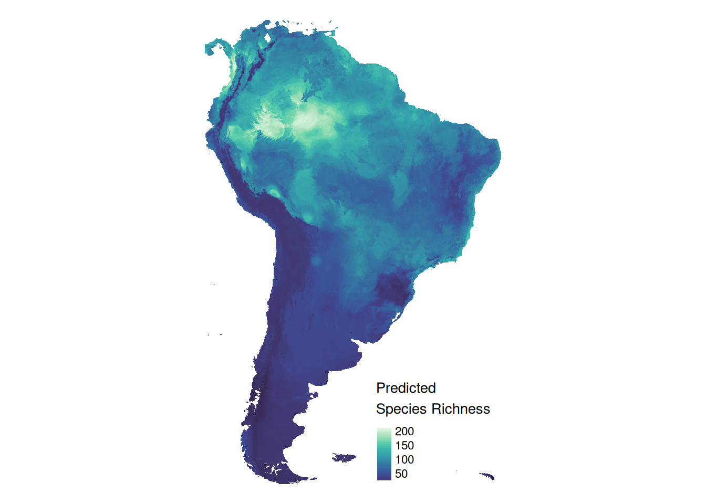
The problem
- distance between reference samples and prediction domain is large
- random CV does not represent actual prediction task
- standard validation approach is not sufficient
rcv_geodist = plot_geodist(plots, modeldomain, unit = "km", showPlot = FALSE)
rcv_geodist$plot + scale_x_log10() + theme_light()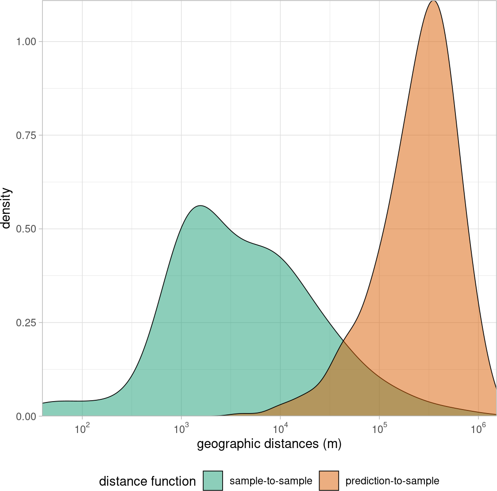
Part 2: Map accuracy via spatial cross-validation (cv)
Setting up knndm-cv
- setting up cv folds such that between-folds distance matches sample-prediction distance
- cv more representative of actual prediction task
knn_setup = CAST::knndm(tpoints = st_transform(plots, 4326),
modeldomain = st_transform(modeldomain, 4326),
samplesize = 4000, k = 10)
plots$fold = knn_setup$clusters
plot(knn_setup)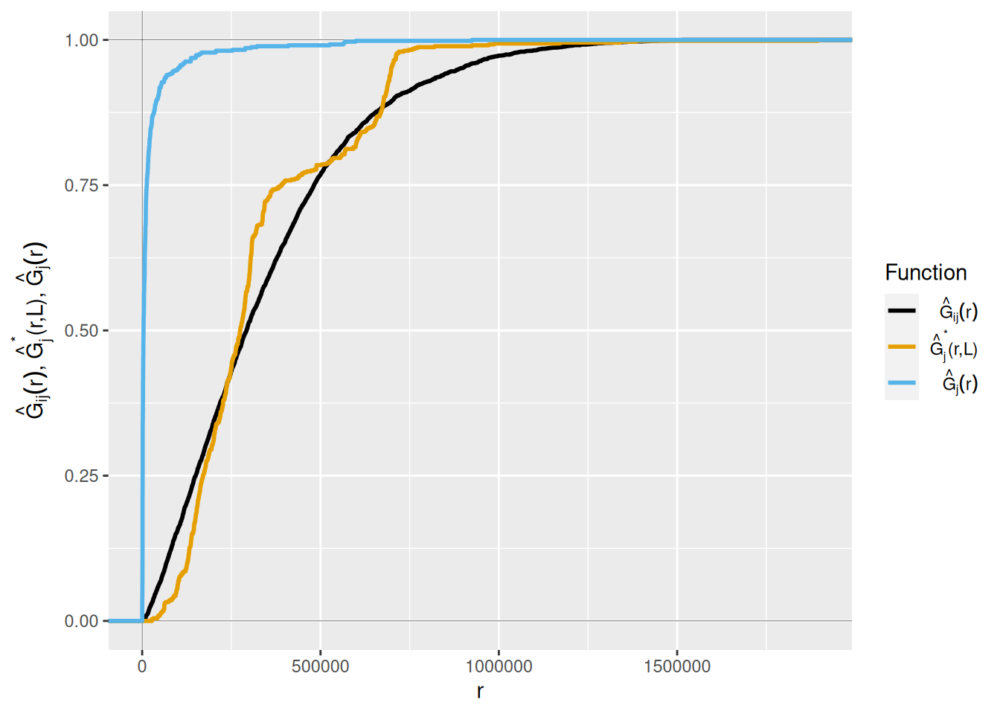
knndm-cv visualization with tmap and ggplot2
tm_shape(modeldomain)+
tm_borders()+
tm_shape(plots)+
tm_symbols(col = "fold", style = "cat",
legend.col.reverse = FALSE,
size = 0.2, title.col = "knndm Folds",
legend.col.is.portrait = FALSE)+
tm_layout(frame = FALSE)
gd = plot_geodist(plots,
modeldomain,
cvfolds = plots$fold,
showPlot = FALSE)
gd$plot +
scale_y_continuous(expand = c(0,0))+
scale_x_continuous(expand = c(0,0),
trans = "log10",
labels = trans_format("log10", math_format(10^.x)))+
theme_light()+
theme(legend.position = "bottom")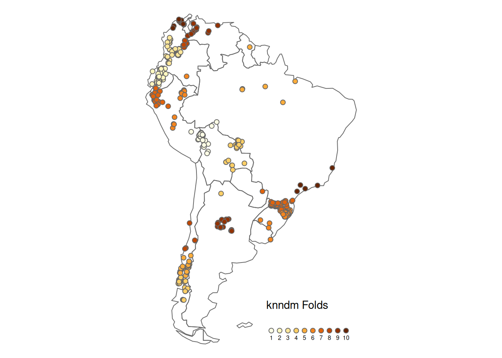
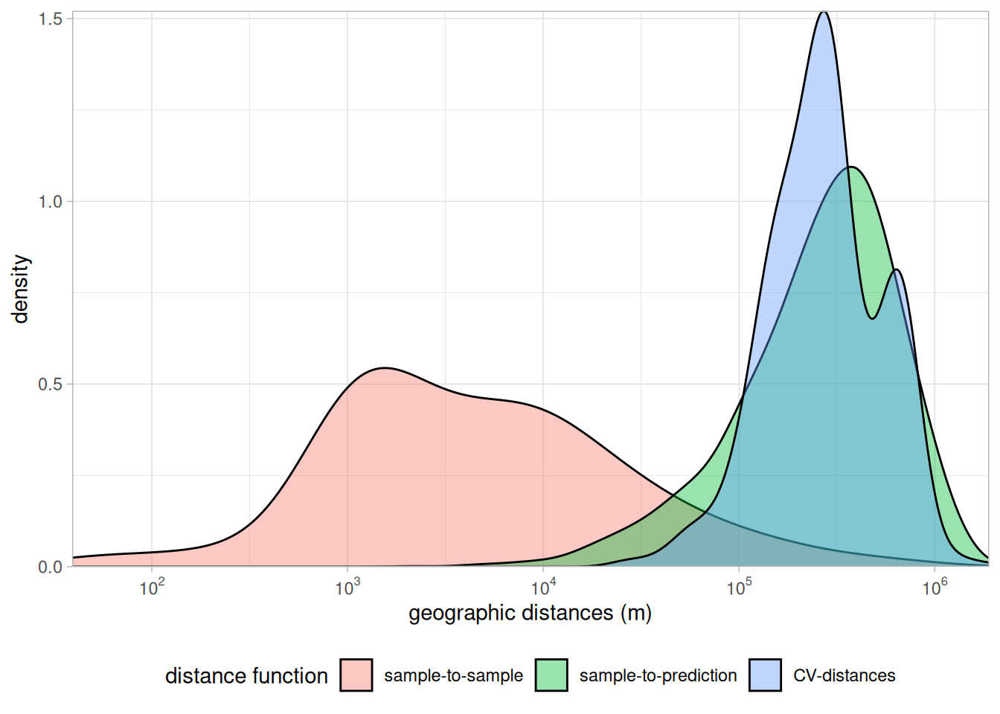
Random Forest Model with knndm-cv
set.seed(51)
rfmodel_knndmcv = caret::train(x = training_data |> select(all_of(predictor_names)),
y = training_data |> pull(response_name),
method = "ranger",
num.trees = 100,
trControl = trainControl(method = "cv",
index = knn_setup$indx_train,
indexOut = knn_setup$indx_test,
savePredictions = "final"),
importance = "permutation")
global_validation(rfmodel_knndmcv) RMSE Rsquared MAE
36.9920558 0.3779557 22.5012158 - prediction results should be very similar to before since we only changes the validation strategy, not the model itself
knndmcv_prediction = predict(predictors, rfmodel_knndmcv, na.rm = TRUE)Part 3: Evaluating the Area of Applicability
Dissimilarity between reference samples
knndmcv_trainDI = trainDI(rfmodel_knndmcv)
knndmcv_trainDIDI of 645 observation
Predictors: bio_1 bio_2 bio_3 bio_4 bio_5 bio_6 bio_7 bio_8 bio_9 bio_10 bio_11 bio_12 bio_13 bio_14 bio_15 bio_16 bio_17 bio_18 bio_19 elev
AOA Threshold: 0.3841501plot(knndmcv_trainDI)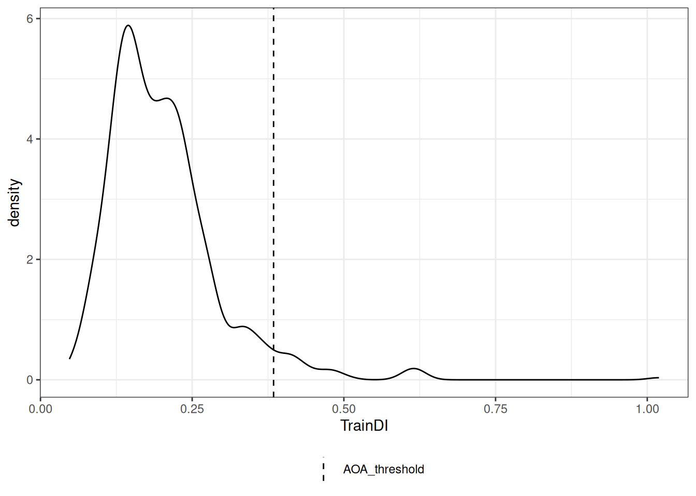
From dissimilarity to area of applicability
aoa_knndmcv = CAST::aoa(predictors, model = rfmodel_knndmcv, trainDI = knndmcv_trainDI)
plot(aoa_knndmcv)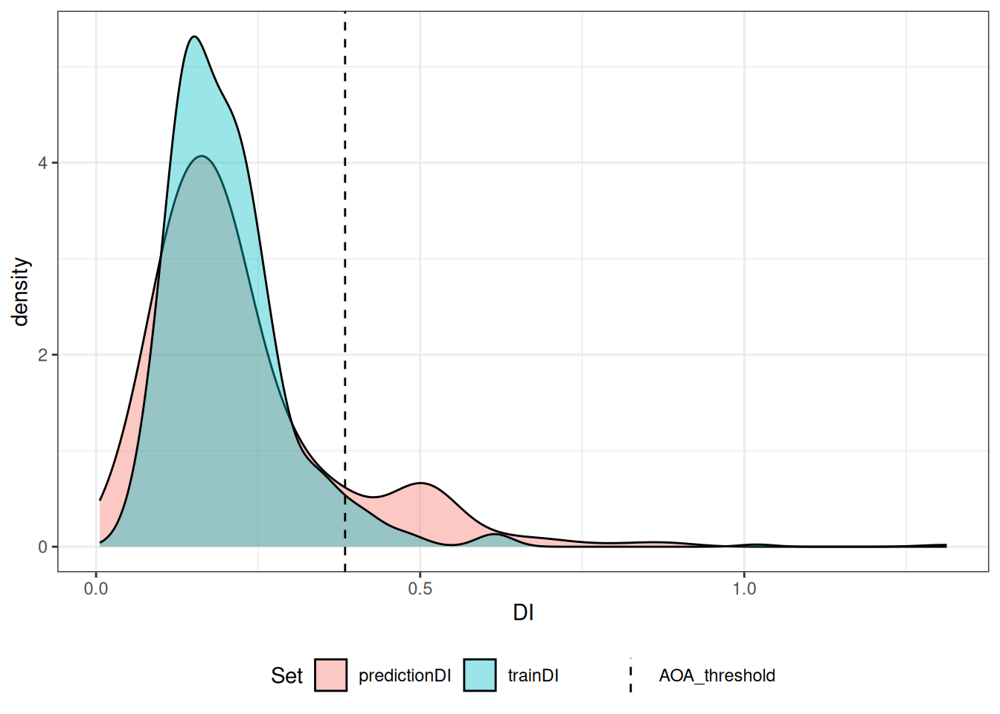
Map creation with tmap
tm_shape(aoa_knndmcv$DI)+
tm_raster(palette = viridis(50), style = "cont", legend.reverse = TRUE, breaks = c(0,0.1,0.368,0.5,1))+
tm_layout(legend.position = c("right", "bottom"),
legend.just = "left",
frame = FALSE)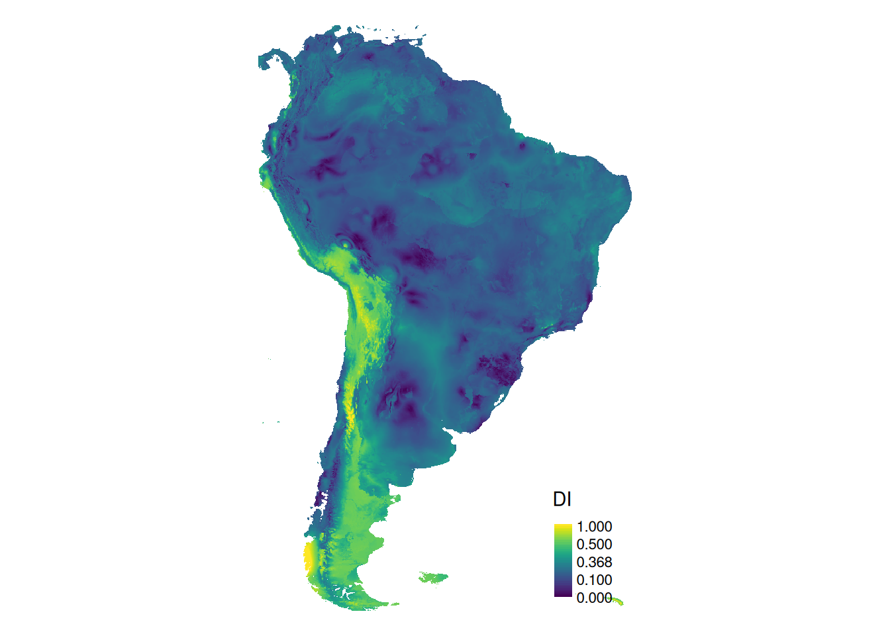
Map creation with tmap
tm_shape(knndmcv_prediction)+
tm_raster(title = "Predicted \nSpecies Richness", style = "cont",
palette = mako(50, begin = 0.2),
legend.reverse = TRUE)+
tm_shape(aoa_knndmcv$AOA)+
tm_raster(palette = c("1" = NA, "0" = "darkgoldenrod1"), style = "cat", legend.show = FALSE)+
tm_add_legend(type = "fill", col = "darkgoldenrod1", border.lwd = 0,labels = "Outside AOA")+
tm_layout(legend.position = c("right", "bottom"),
legend.just = "left",
frame = FALSE)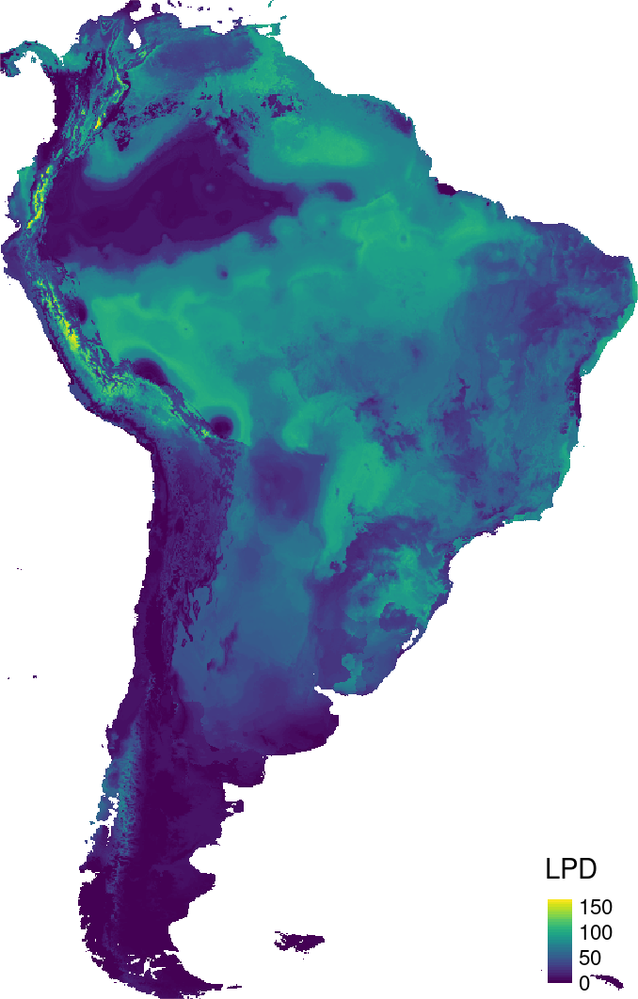
Part 4: Spatial Variable Selection
- simplify the model by selecting predictors based on their performance in new regions
- new regions are defined by spatial cv folds (here knndm approach)
set.seed(2516)
ffs_knndmcv = CAST::ffs(predictors = training_data |> select(all_of(predictor_names)),
response = training_data |> pull(response_name),
method = "ranger",
num.trees = 100,
minVar = 2,
tuneGrid = expand.grid(splitrule = "variance",
mtry = 2,
min.node.size = 5),
trControl = trainControl(method = "cv",
number = 10,
index = knn_setup$indx_train,
indexOut = knn_setup$indx_test,
savePredictions = "final"),
importance = "permutation",
verbose = FALSE)Compare Model Results
cv_results = rbind(global_validation(rfmodel_rcv),
global_validation(rfmodel_knndmcv),
global_validation(ffs_knndmcv)) |>
as.data.frame() |> mutate("CV" = c("random", "knndm", "knndm"),
"predictors" = c(ncol(rfmodel_rcv$trainingData)-1,
ncol(rfmodel_knndmcv$trainingData)-1,
ncol(ffs_knndmcv$trainingData)-1))
knitr::kable(cv_results)| RMSE | Rsquared | MAE | CV | predictors |
|---|---|---|---|---|
| 27.80677 | 0.6064448 | 16.12041 | random | 20 |
| 36.99206 | 0.3779557 | 22.50122 | knndm | 20 |
| 34.70287 | 0.4227883 | 22.18723 | knndm | 6 |
Part 5: Spatially Explicit Error Mapping
- translating the DI to RMSE
- maximizing AOA by feature space cluster cv
ffs_prediction = predict(predictors, ffs_knndmcv, na.rm = TRUE)
aoa_ffs = aoa(predictors, model = ffs_knndmcv)
set.seed(10)
ffs_calib = calibrate_aoa(aoa_ffs, model = ffs_knndmcv, multiCV = TRUE, length.out = 6)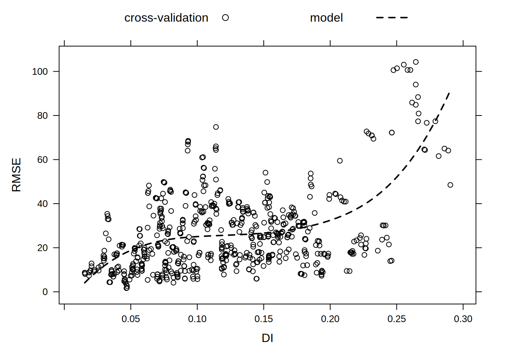
Map creation with tmap
tm_shape(ffs_prediction)+
tm_raster(title = "Predicted \nSpecies Richness", style = "cont",
palette = mako(50, begin = 0.2),
legend.reverse = TRUE)+
tm_shape(ffs_calib$AOA$AOA)+
tm_raster(palette = c("1" = NA, "0" = "darkgoldenrod1"), style = "cat", legend.show = FALSE)+
tm_add_legend(type = "fill", col = "darkgoldenrod1", border.lwd = 0,labels = "Outside AOA")+
tm_layout(legend.position = c("right", "bottom"),
legend.just = "left",
frame = FALSE)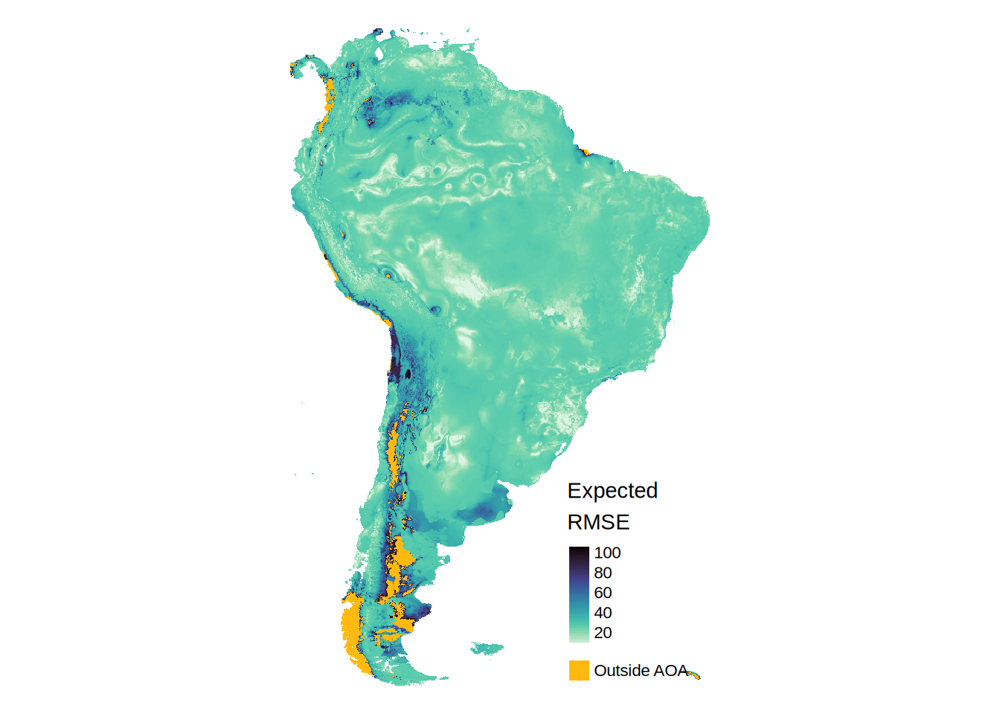
Map creation with tmap
tm_shape(ffs_calib$AOA$expected_RMSE)+
tm_raster(title = "Expected \nRMSE",style = "cont", legend.reverse = TRUE, palette = mako(50, direction = -1))+
tm_shape(ffs_calib$AOA$AOA)+
tm_raster(palette = c("1" = NA, "0" = "darkgoldenrod1"), style = "cat", legend.show = FALSE)+
tm_add_legend(type = "fill", col = "darkgoldenrod1", border.lwd = 0,labels = "Outside AOA")+
tm_layout(legend.position = c("right", "bottom"),
legend.just = "left",
frame = FALSE)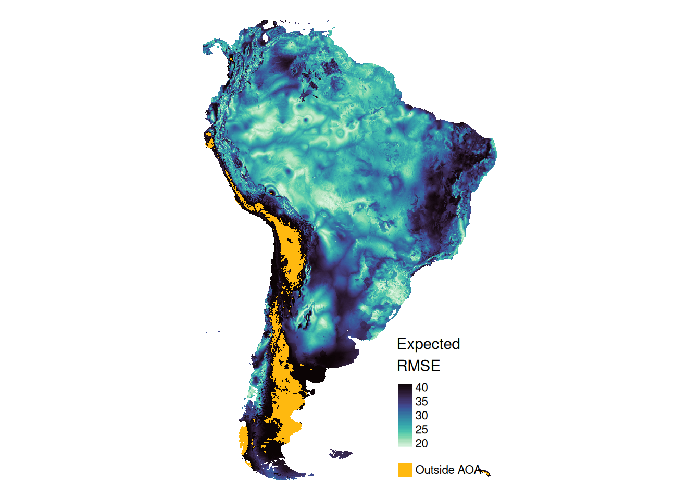